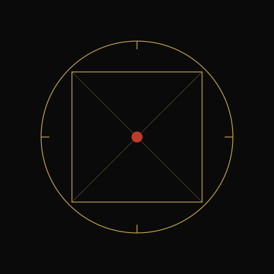
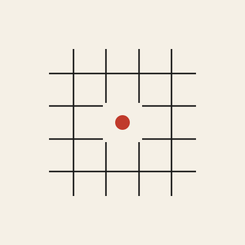
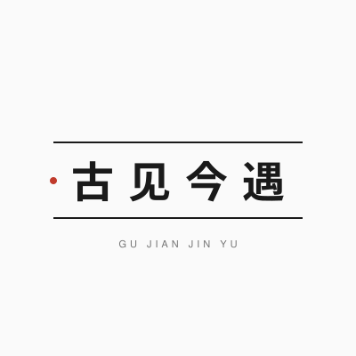
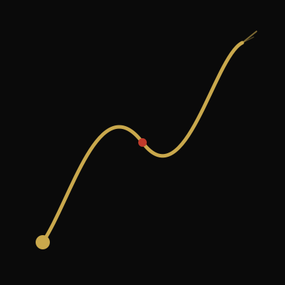
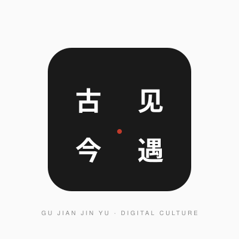

01
01
02
03
04
05Circle meets square. Time meets space. The red dot is the moment of encounter.
Warp and weft of history. The center breaks open — a vermillion seed of the new.
Two half-arcs approach from past and future. They almost touch. That gap is the brand.
A single calligraphic gesture links origin to destination. Ink becomes mountain becomes data.
Four fields, four characters abstracted into pure color. The white void at center is where they converge.